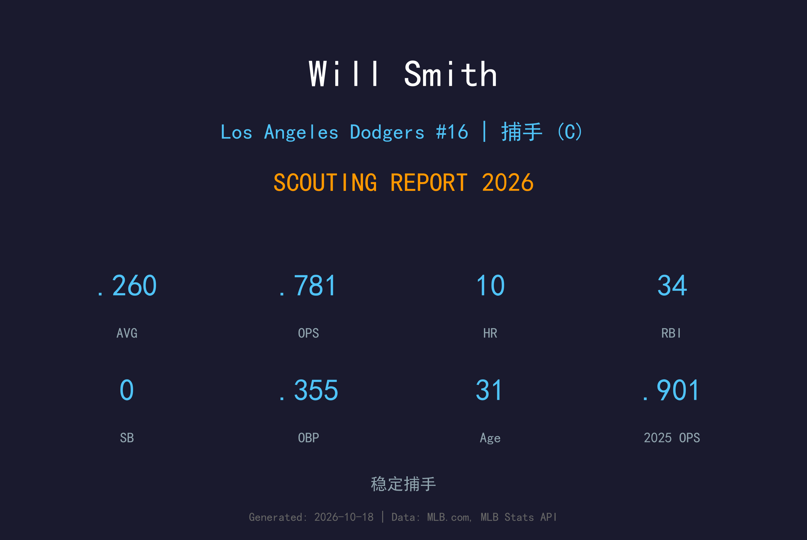
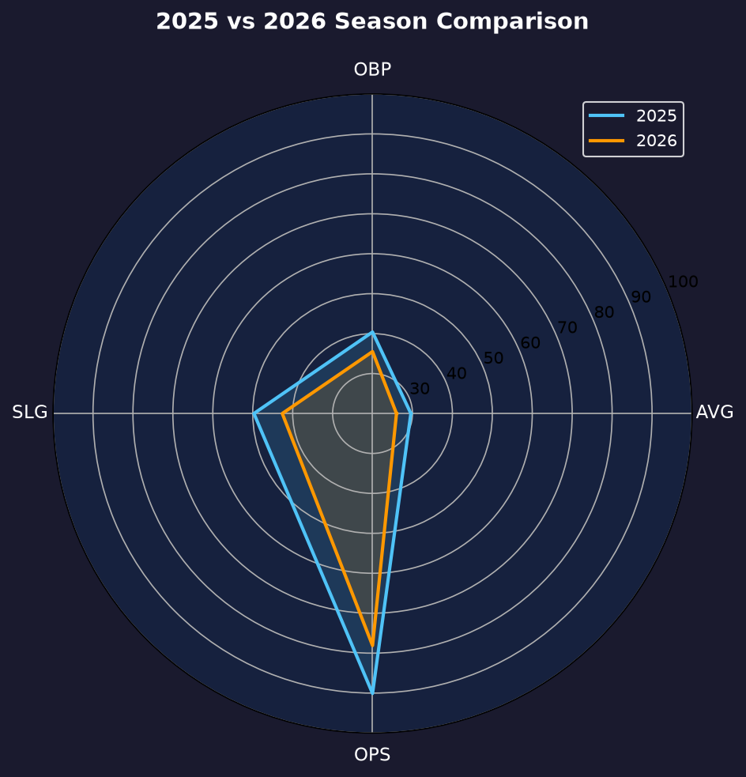
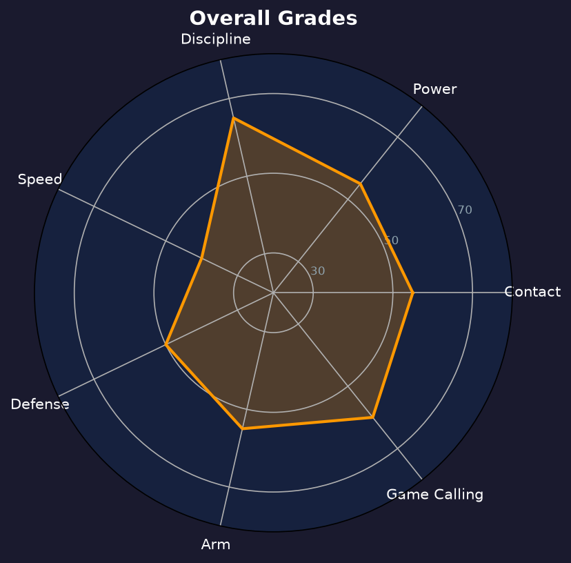

Los Angeles Dodgers #16 | 捕手 | 右打 | 主炮捕手

Will Smith 是道奇主战火捕，以 elite 级选球、稳定长打与高于平均的接捕技术稳坐球队第一捕手位置。
2025年他缴出.296/.404/.497、OPS .901 的生涯年，入选全明星。2026年因伤势仅出赛73场，数据回落至.260/.355/.426、OPS .781，10轰34打点——产量缩水但上垒率.355仍属捕手顶级水准。
31岁的 Smith 仍处捕手黄金期的尾段。他的 framing、比赛指挥与打点能力在联盟捕手中排名前列，是道奇投手群最信任的幕后指挥官。健康问题是他近年最大的敌人，出赛数已连续两季不足。
新人年即轰出15轰，2020年更在国联冠军赛打出关键全垒打，迅速锁定道奇主捕地位。
缴出.261/.359/.500、19轰的精英捕手数据，首次入选全明星赛。
17轰61打点，上垒率突破.400，成为道奇打线中最稳定的 on-base 机器之一。

| 赛季 | G | AVG | OBP | SLG | OPS | HR | RBI | BB | SO |
|---|---|---|---|---|---|---|---|---|---|
| 2025 | 110 | .296 | .404 | .497 | .901 | 17 | 61 | 64 | 89 |
| 2026 | 73 | .260 | .355 | .426 | .781 | 10 | 34 | 34 | 45 |
Smith 的挥棒短而有力，擅长处理内角速球并把球拉向左外野。2026年他的击球初速与仰角仍维持高档，但出赛数受限让他难以累积 counting stats。73场10轰的全垒打频率（每7.3场1轰）其实优于2025年（每6.5场1轰），火力本身并未衰退。
选球是 Smith 最突出的武器。2026年34次保送对45次三振，BB/SO 比0.76，上垒率.355在捕手中名列前茅。OBP-AVG差距.095，显示他极少追打坏球，常能逼使投手进入 deep count。
Smith 的 framing 稳定在中上水准，阻挡与传球也在平均以上。他与道奇王牌 Yamamoto、Glasnow 的配合默契极佳，是球队敢于让他全权主导比赛策略的原因。唯一的短板是臂力——阻杀成功率仅联盟平均水准，跑者敢于对他尝试盗垒。
73场出赛是生涯新低，伤病让他的赛季碎裂成数段。但健康时的 Smith 仍是那个.355上垒率的 elite 火捕——他的问题是"能不能留在场上"，而不是"还能不能打"。

火力与选球兼备的主捕，健康决定上限
B 级 / 主力级捕手
道奇 2026 季后赛战绩：NLDS 3-1 晋级、NLCS 0-4 止步。
| G | PA | AVG | OBP | SLG | OPS | HR | RBI | BB | SO |
|---|---|---|---|---|---|---|---|---|---|
| 8 | 32 | .097 | .125 | .161 | .286 | 0 | 2 | 1 | 9 |
Will Smith 的2027赛季课题只有一个：健康。道奇需要他蹲满110-120场，他的火力与选球仍是球队捕手群的顶级配置。球队可能继续减少他的蹲捕场次、增加指定打击轮值，以延长他的巅峰。
2026：73场、.260/.355/.426、10轰——火力频率未衰，但伤病切碎赛季
2027：目标回到110+场，OPS 重回.800；若健康，仍是联盟前五火捕
2028+：逐步增加 DH 比例，延长打击寿命
Will Smith 出生于肯塔基州路易斯维尔，2016年首轮被道奇选中。2019年登上大联盟后，他用一支支关键全垒打迅速征服洛杉矶球迷，"Will Smith Is On Fire" 的欢呼声响遍道奇体育场。
他是道奇2020年代王朝的御用主捕，与 Friedman 时代的多位王牌共同成长。2023年首次入选全明星，2025年缴出生涯年，成为联盟最会选球的捕手之一。
场外 Smith 以沉稳和幽默并存的性格深受队友喜爱。他热爱高尔夫，休赛期常驻路易斯维尔陪伴家人，是道奇更衣室中"安静的核心"型球员。